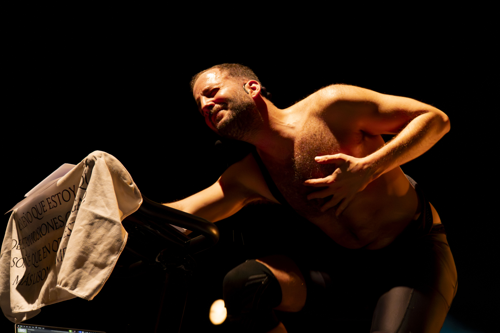
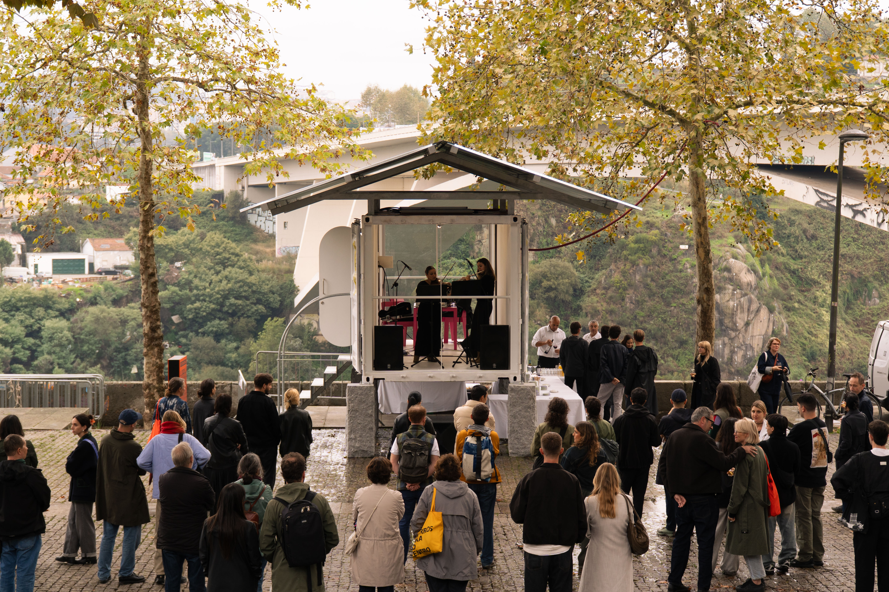
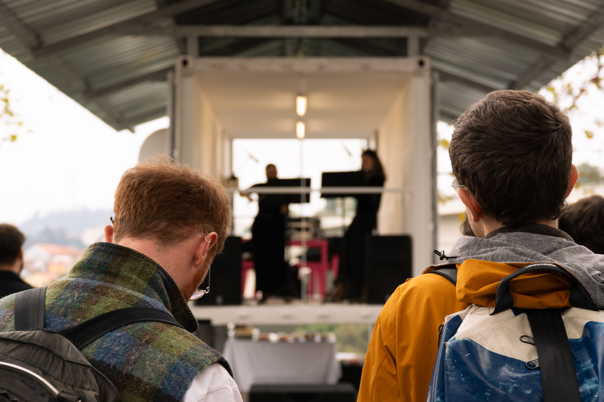
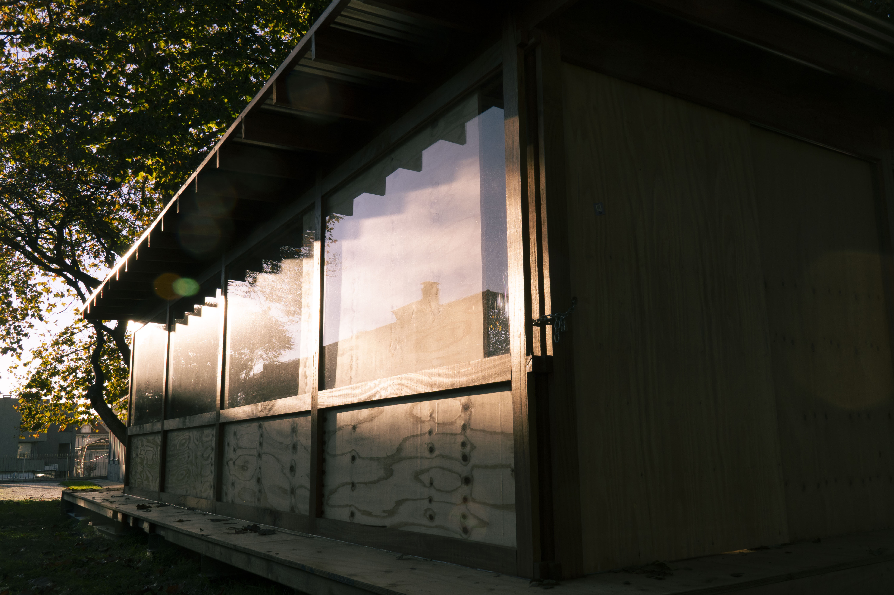
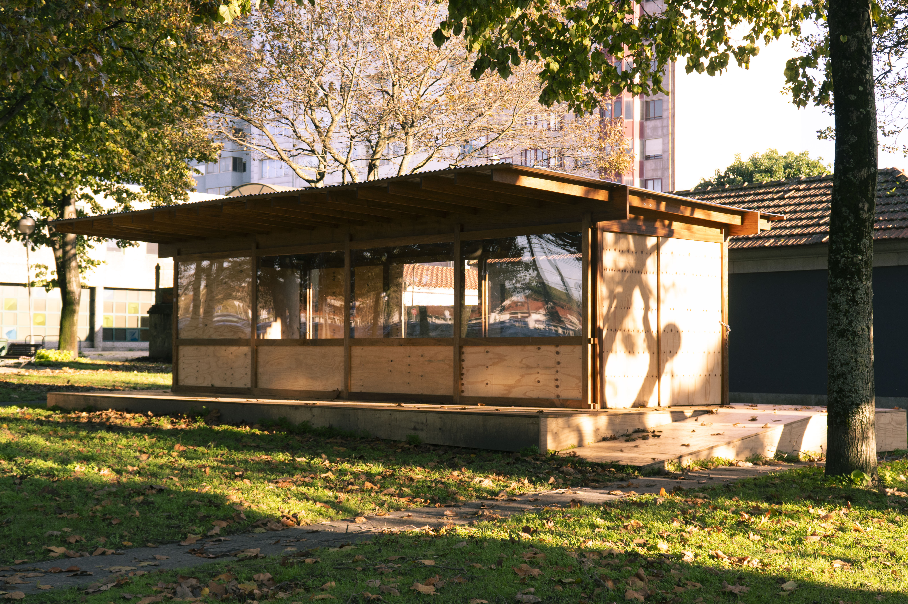
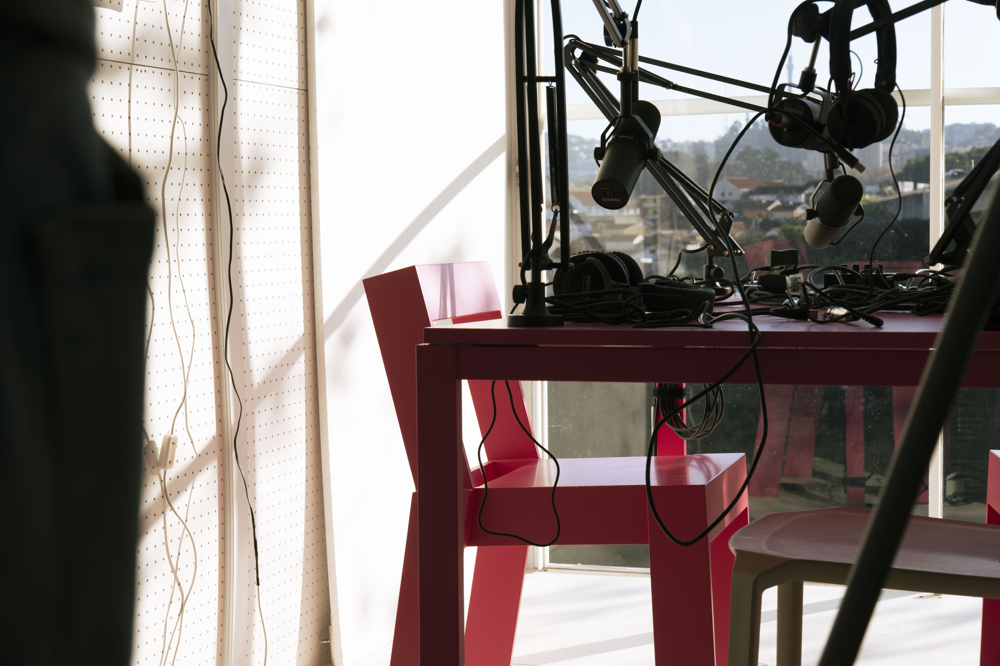
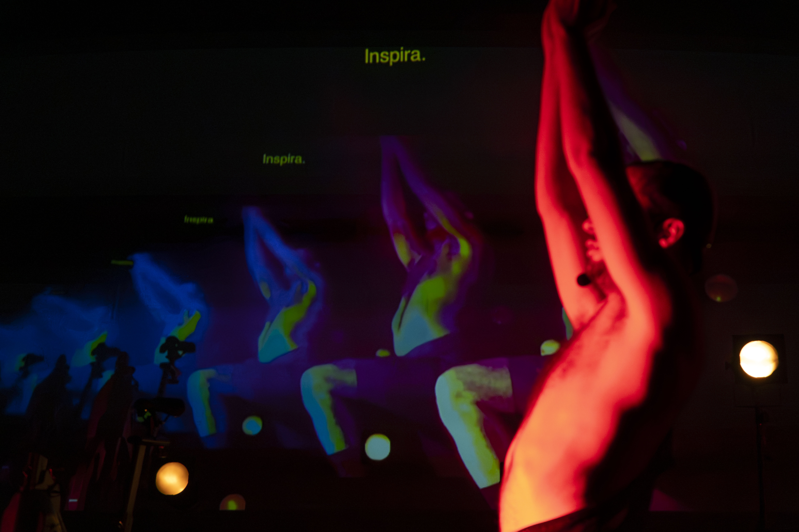

Porto Design Biennale
Um dos meus desafios profissionais mais recentes foi documentar a 4.ª edição da Porto Design Biennale, com o tema "O Tempo é Presente. Desenhar o Comum." - um projeto com um impacto real e duradouro nas comunidades. Esta seleção é um pequeno vislumbre do que foi a Biennale.










